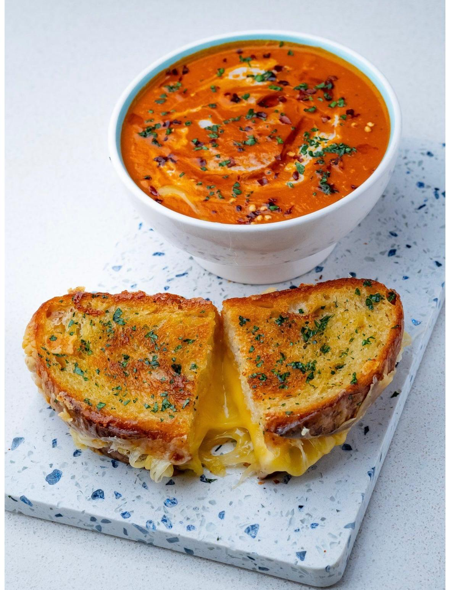

☰
Sommaire
1.
Home page
2.
Autumn
3.
Winter
4.
Summer
5.
Batchcooking
← Back
Soup with grilled cheese

⏱️ Prep Time
15 min
🔥 Cook Time
30 min
👥 Servings
3 or 4
Ingredients
1/2 little pumpkin
2 carrots
2 potatoes
1 ognion
1 garlic glove
2 pieces of bread
Some gratted cheese
Salt and peper
Instructions
Peel and slice your vegetables(pumpkin,carrots,poatoes)in chunks.
Add oil in a pot and put all the vegetables in with some salt and peper.
After 5min, add water until it covers your vegetables.
Let this cook 30min.
Meanwhile put some gratted cheese on bread slices and place them in the oven(grilled mode) for 5-7min
When the vegetables are cooked, mixed them until you obtain a smooth texture.
Enjoy!
💡 Chef's Tips
For extra flavor, you can add fresh cilandro in the soup!